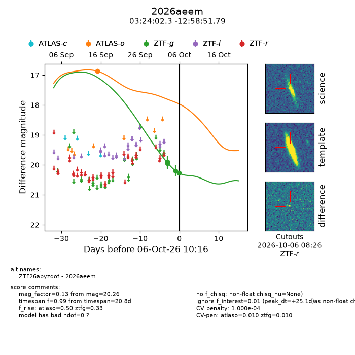
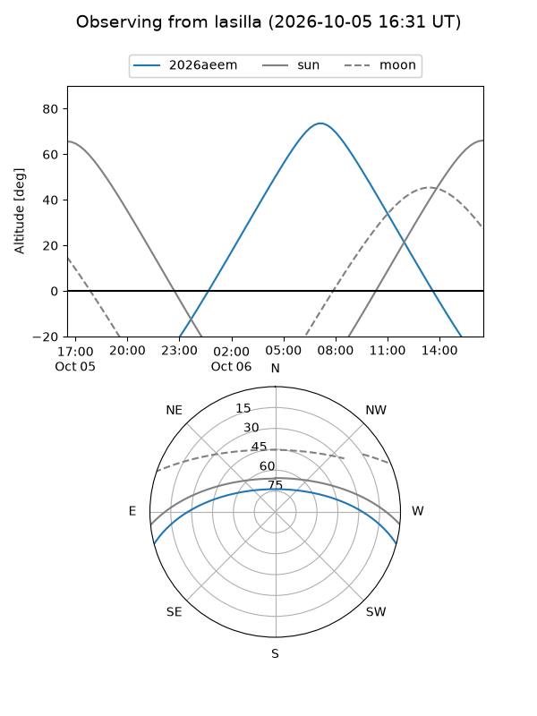
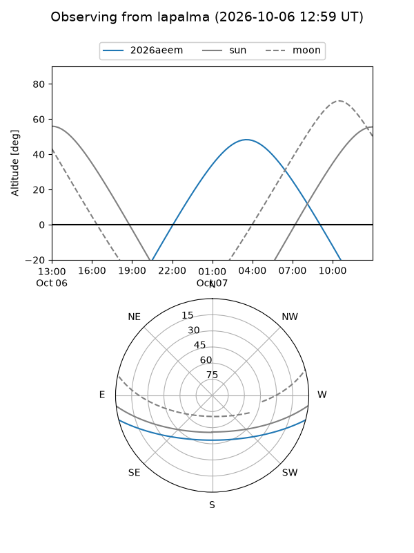
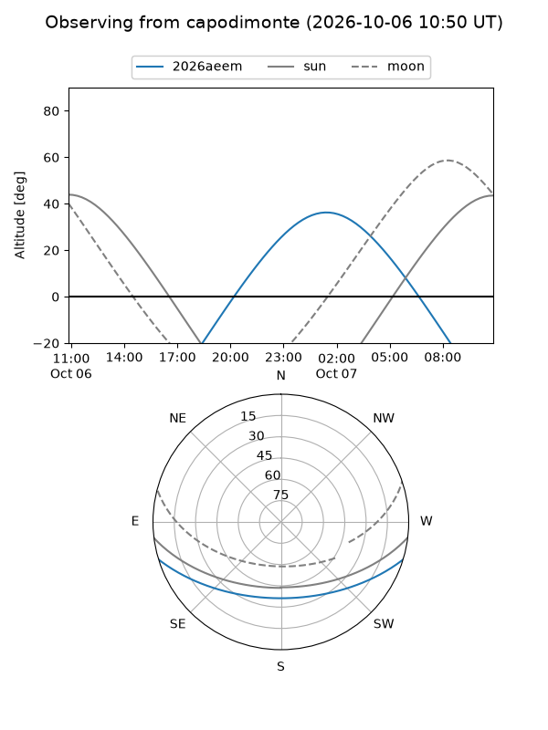
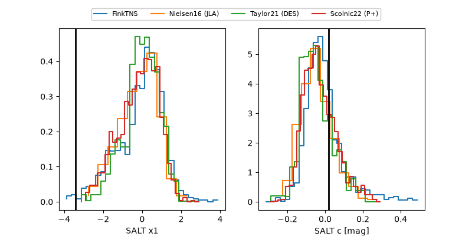

2026aeem
Target 2026aeem at 2026-10-06 10:18
Aliases and brokers:
FINK-ZTF: ztf.fink-portal.org/ZTF26abyzdof
Lasair-ZTF: lasair-ztf.lsst.ac.uk/objects/ZTF26abyzdof
ALeRCE-ZTF: alerce.online/object/ZTF26abyzdof
YSE-PZ: ziggy.ucolick.org/yse/transient_detail/2026aeem
TNS name: wis-tns.org/object/2026aeem
Direct TNS query: direct search
alt names
ZTF26abyzdof (ztf,fink_ztf)
2026aeem (tns,yse)
Coordinates:
equatorial (ra, dec) = 51.0097,-12.98105
equatorial (HMS+DMS) = 03:24:02.34,-12:58:51.79
galactic (l, b) = (198.9838,-51.66724)
Flags:
TNS type: nan
peak dt: +25.1
likely cv: !!
Photometry:
last atlaso=16.87, ztfg=20.26
1 atlaso, 4 ztfg detections
Lightcurve

Visibility



Additional plots
